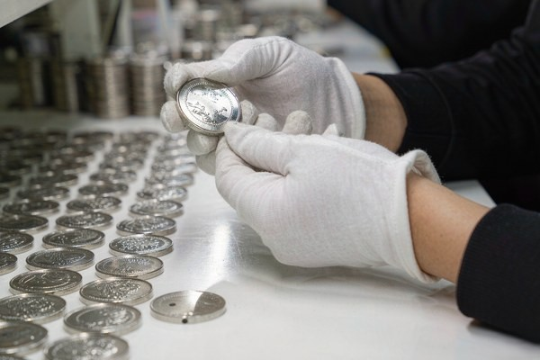
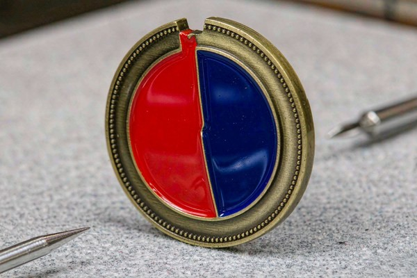

The 12-Point Inspection Checklist
Twelve points sounds arbitrary until you run the inspection once. It covers every stage where a coin can go visibly wrong, and every one of them can be judged by looking at the coin. Work top to bottom, write the result down as you go, and the checklist becomes evidence rather than an opinion.
| # | Check | What a failure looks like |
|---|---|---|
| 1 | Plating color against the proof | Overall tone visibly different from the approved sample |
| 2 | Plating evenness | Dark patches, streaks, or a matte zone where the finish should be uniform |
| 3 | Blistering, flaking, pinholes | Raised bubbles, flaked metal, or tiny craters in the coating |
| 4 | Edge plating wear | Thin or bare metal along the rim, usually from handling |
| 5 | Enamel inside the metal border | Color bleeding past the recessed field onto the relief |
| 6 | Enamel bubbles and pinholes | Small craters or air pockets in the color fill |
| 7 | Enamel color and fill level | Wrong shade, or a surface sitting below the metal line |
| 8 | Thin-line definition | Hairlines in the artwork breaking up or disappearing |
| 9 | Relief depth and definition | Flat spots where the strike lost the shape of the approved proof |
| 10 | Edge type and consistency | Wrong edge, or a reeded rim that is uneven around the circumference |
| 11 | Cut-outs and apertures | Burrs, partial holes, or openings that are not fully pierced |
| 12 | Moving parts | A spinner that jams, rattles loose, or will not lock in position |
Points one through four judge the plating, five through seven judge the enamel, eight and nine judge the strike, and ten through twelve judge the edge and any moving hardware. Each group gets its own section below, along with how to look for it properly rather than just glance.
Plating: Evenness, Blistering, and Edge Wear
Plating is the finish the buyer actually sees, which is why plating defects trigger the most rejections. It is also the finish most sensitive to how the coin was handled between the bath and the box. The check has three parts.
Evenness means the finish reads the same across the whole face. A good coin under raking light shows one continuous tone. A streaky or patchy coin shows a matte zone where the plating thinned out during the bath, usually because the coin was not rinsed properly or the racking was uneven. Evenness is also the hardest thing to judge from a screen proof, so it has to be judged against a real sample.
Blistering, flaking, and pinholes are adhesion failures. Blisters are raised bubbles where the plating lifted off the base metal, usually from moisture in the blank. Flakes are areas where plating has already come off, which means the coin was handled hard enough to scrape it. Pinholes are tiny craters, often from contamination in the bath. All three are hard fails. There is no tolerance argument for a coin with a bubble in the middle of the face, because that bubble will still be there in ten years and it is visible in every photograph of the event.
Edge wear is the one plating defect that is normal to a degree. Coins rub against each other in the bag, against the carton, and in a pocket, and the rim wears first. This is a tolerance question, not a defect question, which is exactly why it needs a number attached to it before production starts. Something like "edge plating wear not exceeding 0.3 millimeters on any point of the rim, and no visible bare metal" is a standard a factory can inspect against. "The edge plating should look even" is not, because it is unfalsifiable.

The color question sits underneath all three. A coin can be perfectly plated and still be the wrong color, and this is the defect buyers argue about most because they are looking at a proof on a screen. The screen proof is a rendering. It cannot show you how antique brass will actually break across a raised edge, and it cannot show the difference between two nickel finishes that look identical in a JPG. This is why our guide to plating and metal finishes recommends approving against a physical sample rather than a rendering, and why the golden sample matters more than the screenshot.
Enamel: Overflow, Underfill, Bubbles, and Color Drift
Enamel is where most coins actually fail, because it is a manual step done by hand at speed. Two finishes behave differently and need different tolerances. Soft enamel sits recessed below the metal and has a slightly domed, tactile surface. Hard enamel is filled, ground back, and polished flush with the surface, which means its failure modes are hard edges and a flat, glassy plane. Our soft enamel versus hard enamel guide covers the process difference in full.
Overflow is the classic defect. Enamel is placed slightly proud of the metal border so it can shrink during curing, and if the fill was too heavy or the border was too narrow, color creeps over the relief. A coin where enamel crosses a line in the artwork is wrong in a way that changes the design. Check every border between a color field and the relief, and pay attention to tight gaps, small numerals, and the narrow channels between letters, which is where fills fail first.
Underfill is the quieter version. The color sits below the metal line, and the coin reads as dull and unfinished even when every color is technically correct. Underfill on soft enamel shows as a visible metal lip around the color field. On hard enamel it shows as a slightly dished surface that catches light unevenly. Neither is a reject on its own, but a run with widespread underfill means the fill station is off, and that is a lot-level problem even when each coin is individually minor.
Bubbles and pinholes come from moisture trapped under the enamel or from air in the fill. Small ones are minor. A cluster of bubbles across the face is a sign that the coins were filled while the base metal still held moisture, and you should count the whole lot as suspect rather than treating it as a per-coin issue.
Color drift is the hardest call, because enamel color depends on the pigment batch, the base metal underneath, and the lighting you happen to be standing in. Compare the coins to the golden sample side by side, under the same light, at the same time. If you are judging a pile of coins against a screen image, you will find differences that are not real, and you will waste an afternoon arguing about something nobody can measure.

Two practical rules for the enamel section. First, inspect under light that makes the metal border obvious, because a thin border is what overflow crosses. Second, check the reverse. The reverse gets less attention during production and more during handling, which is exactly the wrong way round. Coins that were stacked face to face in a tray often come out with a faint transfer mark on the back that nobody noticed because nobody looked.
Strike Definition: Are Thin Lines Still Crisp?
Strike quality is the difference between a coin that looks struck and a coin that looks alive. It is set by the die, the metal thickness, the strike pressure, and the polishing, and by the time you receive the coin the only thing you control is whether you accept it. So you need to know what to look for.
Hold the coin at a shallow angle and rake the light across the relief. Good strike shows a clear transition from the raised field to the recessed background, with a defined edge you can trace. Poor strike shows a mushy transition, a soft shoulder, and detail that dissolves into the background.
The most useful diagnostic is thin line continuity. Take the hairline details in your own design and follow them with your eye. Text outline, a small date, the thin border around a shield, the fine lines inside a flag. On a good strike those lines run continuously. On a poor strike they break, thin out, or disappear in sections. This is the single clearest quality test you can perform on a coin, because it uses your own artwork as the ruler rather than somebody else's opinion about what good looks like.
Relief depth is the companion check. Some coins in a run come out flatter than others because the metal was slightly thinner or the press ran at the low end of the pressure band. Put the coin next to the golden sample and compare the height of the relief with a fingertip. A visibly flatter coin is not a defect to argue about if it falls within the tolerance you set, but a run where half the coins are flat is a die or setup problem, and it should be raised as a lot issue rather than a coin issue.
One caveat: die-struck and die-cast coins behave differently here. A cast coin has a softer, less precise relief by nature, and line breaks that would be a reject on a struck coin can be normal on a cast one. Our guide to how challenge coins are made walks through both processes stage by stage, and knowing which process your order used tells you which expectations are reasonable.
Edge, Cut-outs, and Moving Parts
The last three checks cover the physical construction rather than the surface finish, and they are where a low-price quote tends to break. We have a full guide to challenge coin edge types if you want the visual options, but the inspection rule for all of them is the same: check that what you ordered is what got made, and that it was made the same way all the way around.
Edge type and consistency. Confirm the edge matches the specification: reeded, rope, chain, cross-cut, or smooth. More importantly, run your thumb around the entire circumference. A reeded edge should feel even, with the same ridges at the same spacing all the way around. You will feel a bad section instantly, because a machine that skipped or doubled part of the rim leaves a spot where the ridges flatten out or bunch up. On a smooth edge, check for chatter and for a visible seam line where the two die halves met, which should be sanded or nearly invisible.
Cut-outs and apertures. Any hole, slot, or window in the design is a place where metal gets left behind. Look for burrs around the opening, partial holes where the punch did not fully pierce, and thin or cracked metal at the corners of the cut. Cut-outs also interact with plating, because the plating line has to be masked around them and a bad mask leaves a halo of bare or doubled metal around the opening. Our article on special effects including cut-outs shows what clean piercing looks like versus a rushed one.
Moving parts. A spinner coin or a bottle-opener coin has a moving element, and a moving element has two failure modes: it jams, and it comes loose. Spin it. It should rotate smoothly with a light, consistent resistance, not grind, not bind at any angle, and it should not have side play. Then check the fastener itself, whether that is a rivet or a screw. A spinning coin that also rattles means the fastener is loose, and a coin that arrives loose will not survive a week in a pocket.
These three checks are quick, and they catch an alarming share of real problems, because they are the parts of the coin that involve cutting, drilling, and assembly rather than a controlled chemical or forming process. Assembly is manual, and manual steps are where variation shows up.
How to Write a Rejection Standard Into Your PO
Here is the part most buyers skip. They inspect the coins, they find problems, and then they discover there is no written standard saying who pays for the remake. A rejection standard written before production costs nothing and removes almost all of that friction.
Grade your defects into three classes. Critical means the coin is unusable or wrong: missing emblem, wrong metal, wrong size, badly deformed. Major means the design is compromised: enamel overflow beyond the border, plating blisters, broken thin lines, wrong color. Minor means cosmetic: light scratches, slight edge wear, a barely visible color variance. Critical gets zero tolerance, major gets a low limit, minor gets a higher one. Setting different limits per class is what makes the standard practical, because treating a scratch and a missing emblem as equally serious is how standards get ignored.
Quantify everything. "Enamel may not overflow its metal border by more than 0.3 millimeters." "Plating blisters covering no more than 2 percent of the face area." "Edge wear not exposing bare metal." Numbers can be measured by two people who do not like each other and reach the same answer. Adjectives cannot, and the argument moves from the coins to the relationship.
State the sampling method. Specify the lot size, the sample size, and the inspection level, and say how the sample is drawn. The standard practice is a general inspection level where the sample grows with the lot: a lot of 100 coins gets roughly 20 checked, a lot of 500 gets around 50, a lot of 1000 gets around 80. Two details protect you more than the numbers do. Pull the sample yourself or have your own inspector pull it, never the factory, because a factory pulling the sample will pull the good corner. And if the order was produced in more than one run, spread the sample across at least three boxes or batches, because defects cluster at the start and end of a run.
Define the remedy and the evidence. Say what happens when the lot fails: full remake, replacement of the defective units, or partial credit, and by what date. Say that the inspection happens before shipment, that the inspector photographs every defect category found, and that a golden sample is sealed with three to five pieces signed by both sides at the moment of approval. That golden sample is the single most valuable object in the whole process, because it converts every future argument into a comparison.
Set the dispute path in advance. Name the third party who decides if you disagree, whether that is a testing house or an agreed expert, and say who pays for that call if it goes against you. Writing this down when both sides are still friendly costs nothing. Writing it down during a dispute costs the relationship.
| Defect class | Typical examples | Suggested limit |
|---|---|---|
| Critical | Wrong design, wrong metal, deformed blank, missing emblem | Zero tolerance |
| Major | Enamel overflow, plating blisters, broken thin lines, wrong color | AQL around 2.5 |
| Minor | Light scratches, slight edge wear, minor color variance | AQL around 4.0 |
One last piece of timing. Inspect before the coins ship, not after they land. Once a pallet is on a boat, your leverage has evaporated: you are paying return freight, storage, and delay, and the factory has no reason to prioritize a replacement. A pre-shipment inspection at the factory, with photos against the standard, costs a small fraction of a return shipment and keeps your event date intact. This is the same principle behind the planning in our challenge coin production timeline guide, where shipping and approval are the two links that lose days.
Want Coins That Pass Your Own Inspection?
Send us your artwork and quantity, and we will run the order against a written QC standard before it ships, with photographs of the sampled coins against your approved proof. You will know what you are getting before it leaves the factory.
Get Free QuoteFrequently Asked Questions
How do I check the quality of custom challenge coins?
Inspect under angled light, compare against the approved proof, and work through a fixed 12-point list: plating evenness, blistering, edge wear, enamel overflow, underfill, bubbles, color drift, thin-line definition, relief depth, edge type, cut-out cleanliness, and moving part function. The list matters more than the eyeballing, because a fixed checklist gets written down and a casual look does not.
What is AQL and what quality level should I request for custom coins?
AQL is the Acceptable Quality Limit, the industry-standard way to express how many defective items you will tolerate in a shipment. For decorative coins, a common starting point is zero tolerance for critical defects such as a wrong design or wrong metal, AQL 2.5 for major defects like enamel overflow or plating blisters, and AQL 4.0 for minor defects like light scratches. Write those numbers into your purchase order rather than leaving the standard as an oral assumption.
How many coins should I sample from a bulk order?
You sample rather than inspect every piece, and the sample grows with the lot size. Under the standard general inspection level, a lot of 100 coins typically means checking 20, a lot of 500 means about 50, and a lot of 1000 means about 80. Two details matter more than the exact number: pull samples randomly rather than accepting the factory's selection, and spread them across at least three boxes or production batches if the order was made in more than one run.
What are the most common defects on custom challenge coins?
In rough order of how often they show up: enamel overflowing past its metal border, plating that is uneven or slightly off in color against the proof, thin design lines breaking up because the strike was too shallow, bubbles in the enamel, edge plating worn thin from handling, cut-outs with burrs or blocked openings, and moving parts that stick or spin freely. Most of these are process problems rather than material problems, which is why they cluster on the coins struck at the start or end of a run.
Can I reject coins that look slightly different from the approved proof?
Only if the difference is inside a tolerance you agreed to in advance. A proof is a screen rendering, not a physical reference, so tiny variations in metal tone, shading, or the exact boundary of a color field are normal between runs. That is exactly why a golden sample, a real struck coin that both sides sign, is the thing you should compare against. Anything not covered by a written tolerance is a conversation, not a rejection.
When should I inspect coins, before shipment or after delivery?
Before shipment, every time. Once the coins are on a boat, your leverage is gone. The buyer pays for return freight, storage, and the delay, and the seller has no reason to move quickly. A pre-shipment inspection, where someone checks the packed cartons at the factory and photographs the defects against the standard, costs a fraction of what a return shipment costs and keeps the event date intact.
How do I write defect tolerances into a purchase order?
Quantify instead of describing. Write the defect type, the measurement in millimeters or percent of face area, the severity class, the AQL for that class, the lot size and sample size, the remedy for a failed lot, and the procedure for disputes. Say the enamel may not overflow its metal border by more than 0.3 millimeters, not that the enamel should be neat. Numeric tolerances are enforceable; adjectives are arguable.
What if the supplier says small variations are normal?
They usually are, and that argument is fair until nobody defined what small means. The fix is not stubbornness but paperwork: put the tolerances in the purchase order before production starts, keep a golden sample from the approved lot, and photograph the sampled defects. Once the standard exists in writing and both sides have a physical reference, the conversation becomes about measurements instead of opinions, which is where you want it.